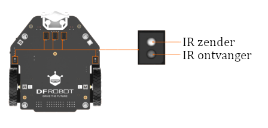
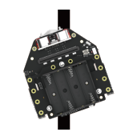
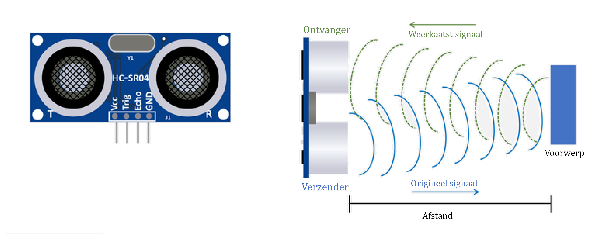

Hoofdstuk 4: Sensoren#
Robots zijn uitgerust met sensoren zoals afstandssensor, geluidsensor, kleurensensor enzovoort. Via deze sensoren kunnen robots hun omgeving observeren, waardoor een robot autonoom kan functioneren. In dit hoofdstuk behandelen we hoe je de lijnvolgsensoren en de ultrasone afstandssensor kunt gebruiken.
De lijnvolgsensoren#
In de onderstaande figuur zie je de vijf lijnsensoren die op de maqueen aanwezig zijn. Elke sensor heeft een infrarood (IR) zender en een IR ontvanger. De IR zender zend infrarode straling uit. Die straling wordt door een witte ondergrond weerkaatst, maar door een zwarte ondergrond geabsorbeerd. Als de IR ontvanger teruggekaatste straling ontvangt (witte ondergrond), zal deze een 0 (False) terugsturen naar de micro:bit. Als het geen straling ontvangt, stuurt het een 1 (True) terug naar de micro:bit.

{kind=link}
Als de robot over een zwarte lijn rijdt, met aan weerszijden een witte ondergrond, zullen een de lijnvolgsensoren boven de witte ondergrond een 0 terugsturen en de lijnvolgsensoren boven de lijn een 1. Op die manier kan vastgesteld worden waar de lijn zich onder de robot bevindt. Zie ook de figuur hiernaast.
De vijf lijnsensoren van de Maqueen zijn van links naar rechts als volgt genoemd: lijnsensor_l2, lijnsensor_l1, lijnsensor_m, lijnsensor_r1, lijnsensor_r2.
De volgende pseudocode omschrijft hoe een lijnvolgprogramma eruit zou kunnen zien:
# Lees de lijnsensoren uit
# Als de middelste lijnsensor (lijnsensor_m) een 1 stuurt:
# Rijd vooruit
# Anders, als linker lijnsensor (lijnsensor_l1 of lijnsensor_l2) een 1 stuurt:
# Draai naar links
# Anders, als rechter lijnsensor (lijnsensor_r1 of lijnsensor_r2) een 1 stuurt:
# Draai naar rechts
In de situatie van de bovenstaande afbeelding zal lijnsensor_r1 een 1 terugsturen en moet de robot dus naar rechts draaien.
Om de waarde van een lijnvolgsensor te krijgen, kan de volgende functie worden gebruikt:
sensor_on_line(sensor) # Op de plaats van sensor moet de naam van de sensor komen te staan.
De ultrasone afstandssensor#
Een andere sensor waarover de Maqueen beschikt, is de ultrasone afstandssensor. Door deze sensor lijkt het net alsof de robot twee ogen heeft. In tegenstelling tot ogen, gebruikt deze sensor geen licht, maar ultrasoon geluid om te bepalen of er zich een voorwerp voor de robot bevindt. Met het linker “oog”, de verzender (T), verstuurt de sensor een ultrasoon geluidssignaal. Dat signaal beweegt zich met de snelheid van het geluid voort en tegen een voorwerp weerkaatsen. Het recht “oog”, de ontvanger (R), vangt het weerkaatste signaal op. Uit het tijdsverschil en de snelheid van het geluid, kan dan berekend worden op welke afstand het voorwerp zich van de robot bevond. Zie ook de schematische tekening hieronder.

Om de afstand vanaf de US sensor te krijgen, wordt de functie rangefinder() gebruikt. Deze functie retourneert de afstand in cm.
Opdrachten hoofdstuk 4#
Schrijf een programma waarbij de waarde van
lijnsensor_mop het scherm van de micro:bit toont. Gebruik de functiesleep()om te zorgen dat de waarde niet te snel verandert.Zoek in het
maqueen.pybestand op wat de snelheid van het geluid is die de Ultrasone Afstandssensor gebruikt om de afstand te berekenen.Schrijf een programma dat de afstand tot de ultrasone afstandssensor op het scherm van de micro:bit toont.
Onderzoek met behulp van de vorige opdracht wat de maximale afstand is die de maqueen kan waarnemen met de ultrasone afstandssensor.